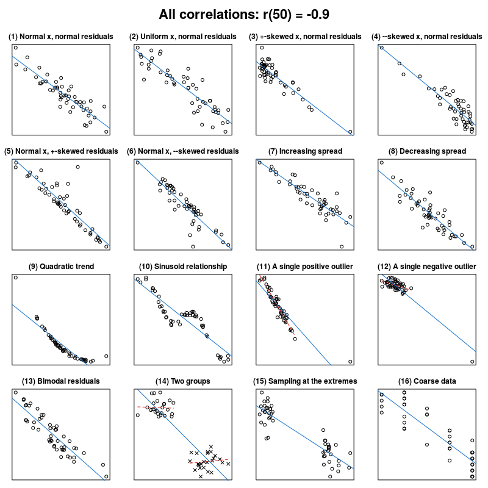
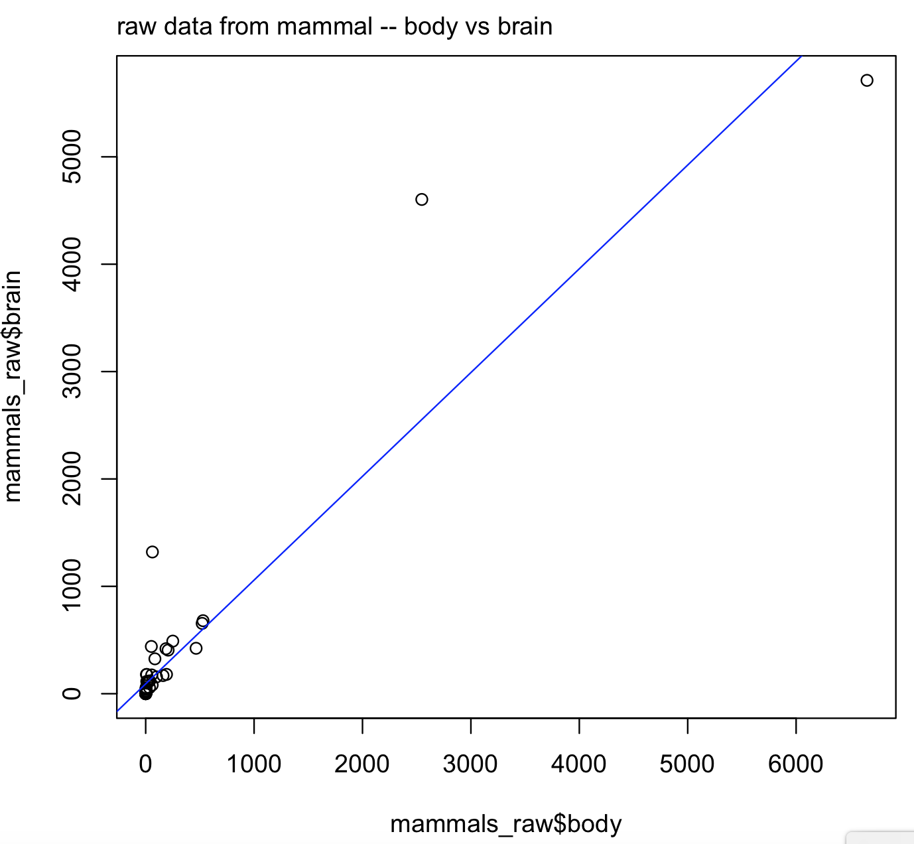
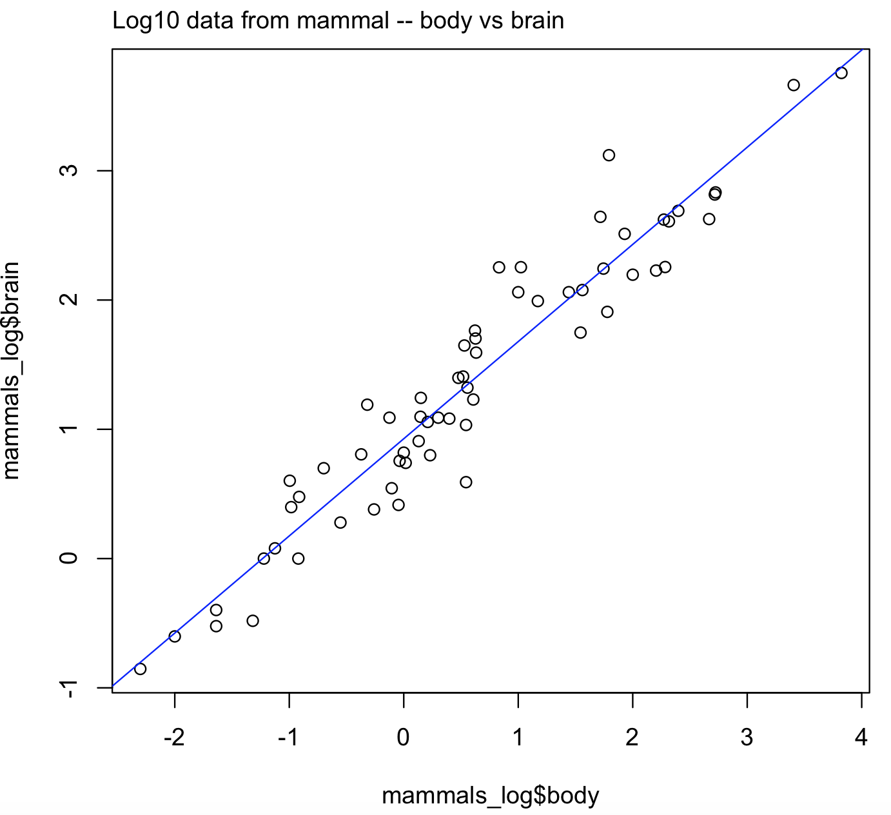
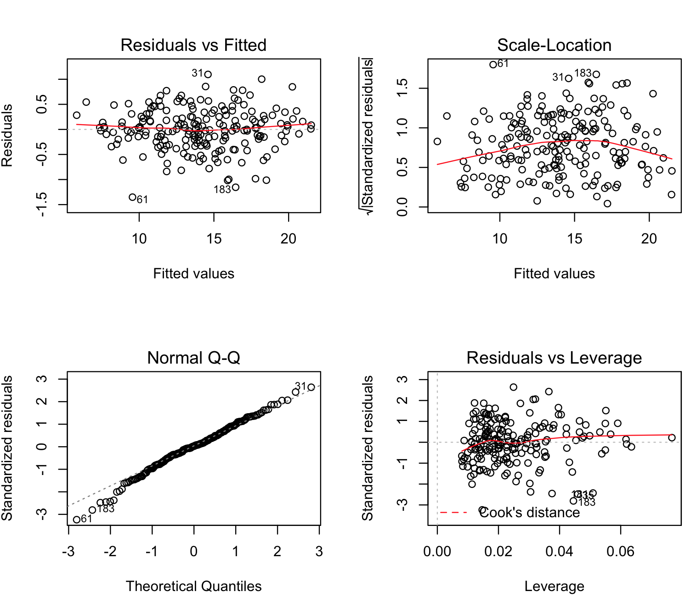
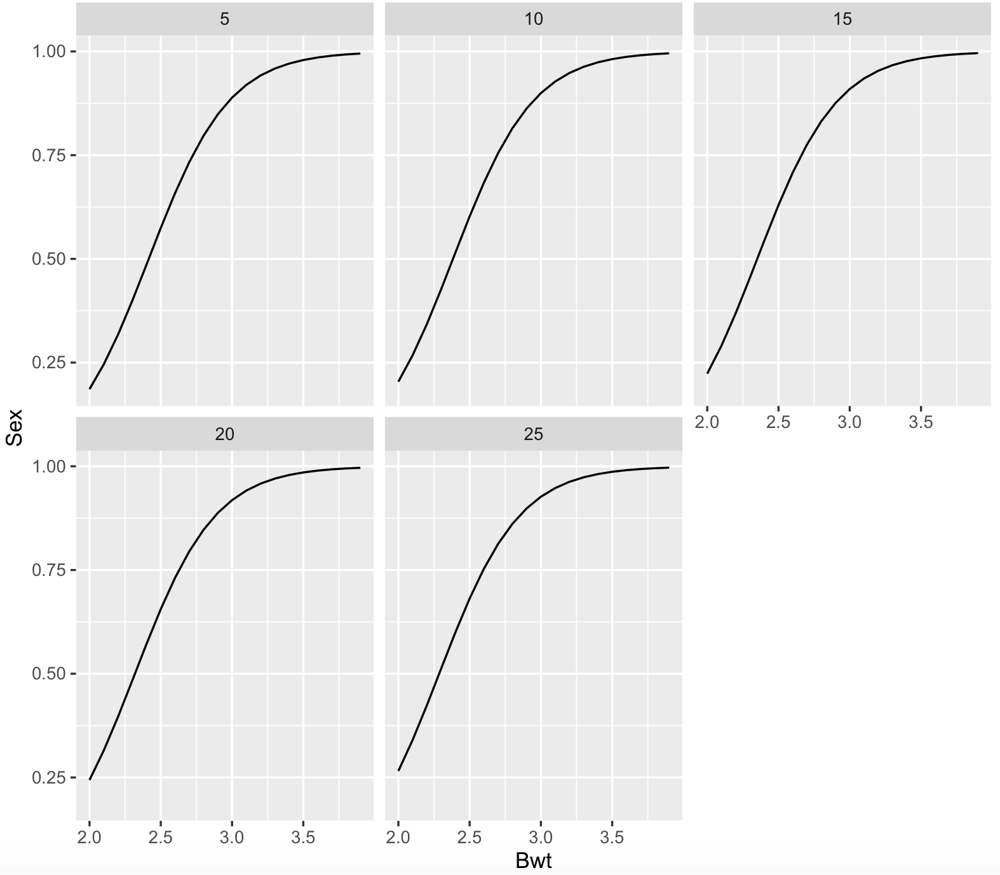
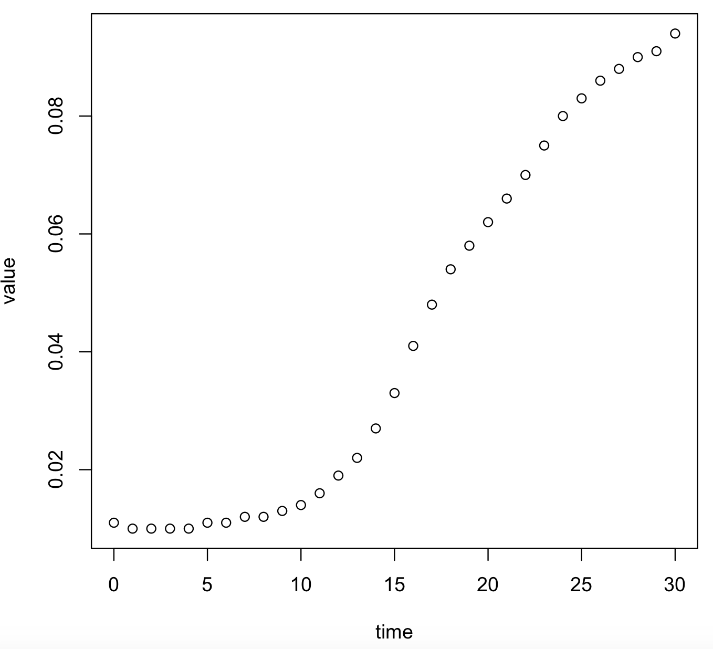
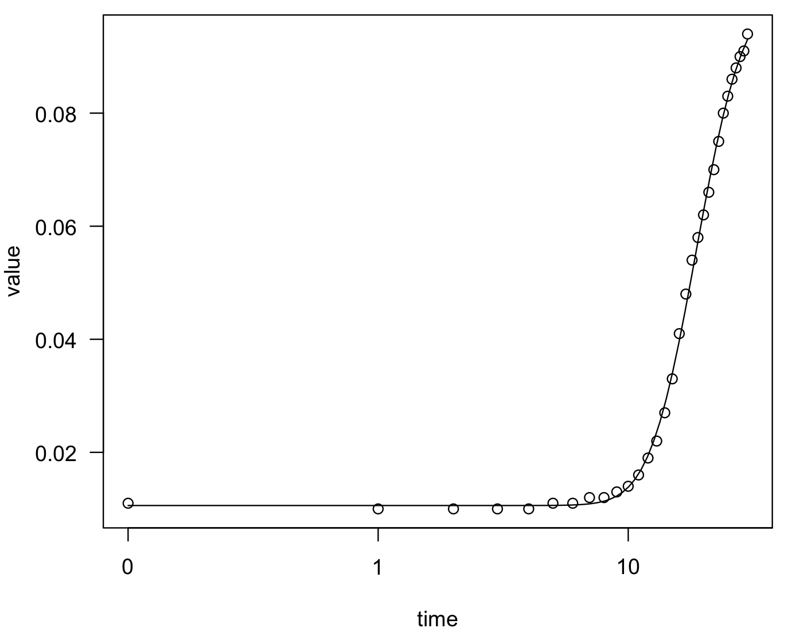
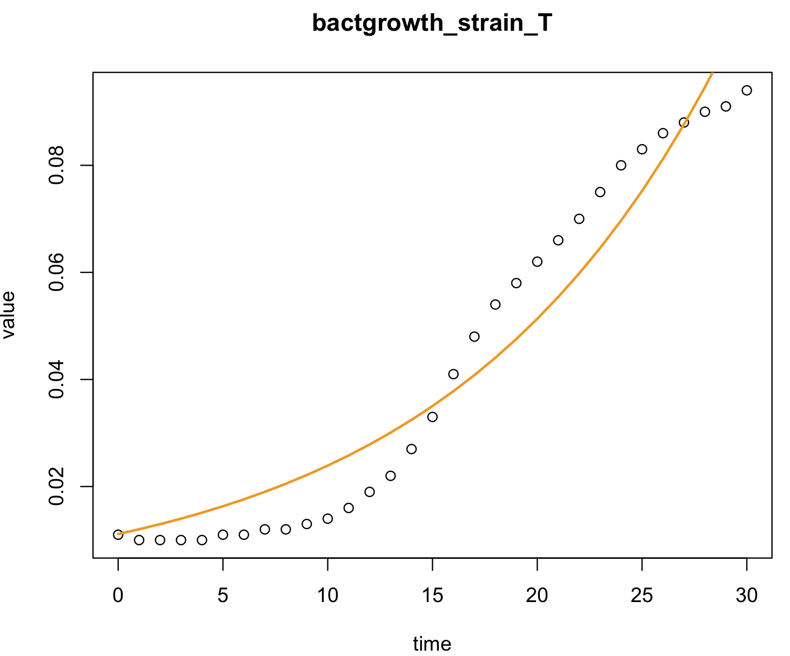

Session 7 – Regressions and ANOVA in R
An important aspect of any statistical analyses is determining the relationship between variables and developing predictive models. A simple linear regression is a model of the relationship between a dependent (response) with a predictor variable and some error associated with it. This model can be expanded to include more than one predictor variable, which is known as a multivariate linear regression. These can be easily implemented in R.
As mentioned, this workshop is not a biostatistics class and you might need to consult your notes for biostatistics. However, as mentioned by Long and Teetor (2019) here are some important considerations when you evaluate the usefulness of your regression models. This is provided by the function summary() on your model.
a) Is the model statistically significant? Check the F statistic at the bottom of the summary.
b) Are the regression coefficients significant? Check the coefficient t statistic and the p-value associate with such statistic.
c) Is the model useful? Check the R2 and its significance.
d) Does the model fit the provided data well? Plot the residuals and check regression diagnostics.
e) Does the data satisfy the assumptions behind linear regression? Check whether the diagnostics confirm that a linear model is reasonable for your data.
As happens in many cases, biological data are more complex and not necessarily follow a linear model. Many alternative and non-linear models might be more useful when dealing with such complexity. We will revise some non-parametric models. This can be visualized in the Anscombes quartet.

Jan Vanhove What data patterns can lie behind a correlation coefficient?.

7.1 Linear regressions
1) The most basic form is a simple linear regression that can be performed directly in R using the function lm(). In this case, we have to two vectors with paired responses where a measurement of one predictor usually represented as x is corresponded with one dependent response represented as y.
For this example, we will use the R-package MASS and its dataset mammals that contains brain and body weights for 62 species of land mammals.
## we can install MASS and load the dataset for this example
install.packages("MASS")
library(MASS)
# assign mammals dataset to an object
mammals_raw <- mammals
head(mammals_raw)
# body brain
#Arctic fox 3.385 44.5
#Owl monkey 0.480 15.5
#Mountain beaver 1.350 8.1
#Cow 465.000 423.0
#Grey wolf 36.330 119.5
#Goat 27.660 115.0We can explore the relationship of bodyas predictor of brain by plotting their one-to-one relationship. Notice the formula brain ~ body inside the regression function lm() that correspond brain (y-axis) and body (x-axis).
plot(x = mammals_raw$body, y = mammals_raw$brain)
mtext(side=3, line=0.5, adj=0, "raw data from mammal -- body vs brain")
abline(lm(brain ~ body, data = mammals_raw), col = "blue")
# let's save this model to an object
raw_brain_body <- lm(brain ~ body, data = mammals_raw)
This plot suggest that this might not be quite linear relationship. The reason is that well-known logistic relationship. For this transformation, we can use the function modify() of the package purrr
# we have already downloaded this function before
library(purrr)
mammals_log <- modify(mammals_raw,log10)
head(mammals_log)
# body brain
#Arctic fox 0.5295587 1.648360
#Owl monkey -0.3187588 1.190332
#Mountain beaver 0.1303338 0.908485
#Cow 2.6674530 2.626340
#Grey wolf 1.5602654 2.077368
#Goat 1.4418522 2.060698
# now we can plot this transformed data
plot(x = mammals_log$body, y = mammals_log$brain)
mtext(side=3, line=0.5, adj=0, "Log10 data from mammal -- body vs brain")
abline(lm(brain ~ body, data = mammals_log), col = "blue")
# let's save this model to an object
log_brain_body <- lm(brain ~ body, data = mammals_log)
# class of this regression object is "lm".
class(log_brain_body)
#[1] "lm"
This is a better plot and it is easier to visualize the linear trend in the log10 transformed data for body and brain size.
2) We can summarize the results of these simple linear regressions with the function summary().
First, we need to understand significance values and symbols (i.e., the asterisks *) next to sections of the output
| Symbol | p-value range | Interpretation |
|---|---|---|
| *** | less than 0.001 | strongly significant and very likely to reject null (e.g., coefficient different than 0) |
| ** | 0.001 < p-value < 0.01 | significant and most likely to reject null (e.g., coefficient different than 0) |
| * | 0.05 < p-value < 0.1 | barely significant and likely to reject null (e.g., coefficient different than 0) |
| . | p-value > 0.05 | likely not significant and might not reject null (e.g., coefficient different than 0) |
| no- asterisks | p-value > 0.05 | does not reject null (e.g., coefficient is not different than 0) |
## summary from untransformed data
summary(raw_brain_body)
#Call:
#lm(formula = brain ~ body, data = mammals_raw)
#
#Residuals:
# Min 1Q Median 3Q Max
#-810.07 -88.52 -79.64 -13.02 2050.33
#
#Coefficients:
# Estimate Std. Error t value Pr(>|t|)
#(Intercept) 91.00440 43.55258 2.09 0.0409 *
#body 0.96650 0.04766 20.28 <2e-16 ***
#---
#Signif. codes: 0 ‘***’ 0.001 ‘**’ 0.01 ‘*’ 0.05 ‘.’ 0.1 ‘ ’ 1
#
#Residual standard error: 334.7 on 60 degrees of freedom
#Multiple R-squared: 0.8727, Adjusted R-squared: 0.8705
#F-statistic: 411.2 on 1 and 60 DF, p-value: < 2.2e-16
## summary from log10 transformed data
summary(log_brain_body)
#Call:
#lm(formula = brain ~ body, data = mammals_log)
#
#Residuals:
# Min 1Q Median 3Q Max
#-0.74503 -0.21380 -0.02676 0.18934 0.84613
#
#Coefficients:
# Estimate Std. Error t value Pr(>|t|)
#(Intercept) 0.92713 0.04171 22.23 <2e-16 ***
#body 0.75169 0.02846 26.41 <2e-16 ***
#---
#Signif. codes: 0 ‘***’ 0.001 ‘**’ 0.01 ‘*’ 0.05 ‘.’ 0.1 ‘ ’ 1
#
#Residual standard error: 0.3015 on 60 degrees of freedom
#Multiple R-squared: 0.9208, Adjusted R-squared: 0.9195
#F-statistic: 697.4 on 1 and 60 DF, p-value: < 2.2e-16Some of the highlights of the raw_brain_body output can be as follows.
| Coefficient name | Coefficient value | Statistic name | Statistic value | p-value | Interpretation |
|---|---|---|---|---|---|
| F | 411.2 | < 2.2e-16 *** | the model is strongly significant | ||
| Intercept | 91.00440 | t-value | 2.09 | 0.0409 * | Intercept coefficient is barely significant |
| Body | 0.96650 | t-value | 20.28 | < 2.2e-16 *** | Body coefficient is strongly significant |
| R-squared | 0.8727 | the value is close to 1.0 and model is useful |
Some of the highlights of the log_brain_body output can be as follows.
| Coefficient name | Coefficient value | Statistic name | Statistic value | p-value | Interpretation |
|---|---|---|---|---|---|
| F | 697.4 | < 2.2e-16 *** | the model is strongly significant | ||
| Intercept | 0.92713 | t-value | 22.23 | < 2.2e-16 *** | Intercept coefficient is strongly significant |
| Body | 0.75169 | t-value | 26.41 | < 2.2e-16 *** | body coefficient is strongly significant |
| R-squared | 0.9208 | the value is close to 1.0 and model is useful |
We can conclude that both models are significant and useful, but the log10 transformed data seems to fit better a linear model (e.g., see intercept row).
3) We can expand our regression models to more than one predictor (i.e., multiple linear regression) that can be performed again using the function lm(). In this case, we have to multiple vectors: one response and many predictors.
For this example, we will use the dataset crabs that has morphological measurements on Leptograpsus crabs from R-package MASS. The variables that included: sp is species - “B” or “O” for blue or orange, sex, index is index 1:50 within each of the four groups, FL is frontal lobe size (mm), RW is rear width (mm), CL is carapace length (mm), CW is carapace width (mm) and BD is body depth (mm).
## we have already downloaded MASS and we assign the crabs dataset to an object
library(MASS)
crab_dataset <- crabs
head(crab_dataset)
# sp sex index FL RW CL CW BD
#1 B M 1 8.1 6.7 16.1 19.0 7.0
#2 B M 2 8.8 7.7 18.1 20.8 7.4
#3 B M 3 9.2 7.8 19.0 22.4 7.7
#4 B M 4 9.6 7.9 20.1 23.1 8.2
#5 B M 5 9.8 8.0 20.3 23.0 8.2
#6 B M 6 10.8 9.0 23.0 26.5 9.8
## we will use BD as dependent and FL, RW, CL and CW as predictors.
crab_multiple_lm <- lm(formula = BD ~ FL+RW+CL+CW, data = crab_dataset)
class(crab_multiple_lm)
#[1] "lm"
summary(crab_multiple_lm)
#Call:
#lm(formula = BD ~ FL + RW + CL + CW, data = crab_dataset)
#
#Residuals:
# Min 1Q Median 3Q Max
#-1.3518 -0.2291 0.0112 0.2664 1.0965
#
#Coefficients:
# Estimate Std. Error t value Pr(>|t|)
#(Intercept) -0.97616 0.15296 -6.382 1.25e-09 ***
#FL 0.42022 0.05585 7.524 1.91e-12 ***
#RW 0.03768 0.03209 1.174 0.242
#CL 0.59511 0.06825 8.720 1.22e-15 ***
#CW -0.30560 0.04935 -6.193 3.43e-09 ***
#---
#Signif. codes: 0 ‘***’ 0.001 ‘**’ 0.01 ‘*’ 0.05 ‘.’ 0.1 ‘ ’ 1
#
#Residual standard error: 0.4208 on 195 degrees of freedom
#Multiple R-squared: 0.9852, Adjusted R-squared: 0.9849
#F-statistic: 3247 on 4 and 195 DF, p-value: < 2.2e-16Based on these statistics, multiple regression is significant (F-statistic), the model seems to be useful (Multiple R-squared is very close to 1), all coefficients with the exception for CL (carapace length) were significant.
4) We can perform some diagnostic plots to checks for heteroscedasticity, normality, and influential observerations.
# diagnostic plots
layout(matrix(c(1,2,3,4),2,2))
plot(crab_multiple_lm)
To understand these plots, we need to look for indications that data might not follow normality or has bias. These include: (a) the Residual vs Fitted should have a random distribution without any pattern (our plot shows that); (b) the Normal Q-Q show fall into oblique dashed line that supports relative multivariate normality (i.e., our multiple linear method is valid) and (c) the plots Scale-Location and Residuals vs Leverage should fall close to the center (i.e., these plots are more or less OK)
5) You can also get a list of influential measurements using functions influence.measures() and influence(). These measurements might be outliers or errors in data input (i.e., miss typing, incorrect instrument calibration, contamination, etc.)
## Notice values with an asterisk (*)
influence_values <- influence.measures(crab_multiple_lm)
#Influence measures of
# lm(formula = BD ~ FL + RW + CL + CW, data = crab_dataset) :
#
# dfb.1_ dfb.FL dfb.RW dfb.CL dfb.CW dffit cov.r cook.d hat inf
#1 0.230383 1.06e-01 -1.27e-01 -1.15e-01 9.97e-02 0.272172 1.022 1.48e-02 0.04052
#2 -0.009954 -4.12e-05 1.55e-03 -6.81e-05 5.21e-04 -0.010550 1.053 2.24e-05 0.02556
#3 0.018286 6.27e-03 -9.58e-03 -9.30e-03 9.08e-03 0.022461 1.056 1.01e-04 0.02866
#...
#46 0.076014 -8.84e-02 2.99e-01 1.25e-01 -1.87e-01 -0.426499 0.914 3.55e-02 0.03051 *
#47 0.037663 -1.85e-02 3.83e-02 4.76e-02 -6.15e-02 -0.088701 1.057 1.58e-03 0.03509
#48 -0.027395 8.70e-03 -7.23e-02 -3.70e-02 6.03e-02 0.115458 1.077 2.68e-03 0.05319 *
#49 -0.017943 1.88e-02 -4.78e-02 -3.53e-02 4.67e-02 0.071147 1.077 1.02e-03 0.04985 *
#50 -0.023874 7.47e-05 -3.10e-02 -2.11e-02 3.51e-02 0.063645 1.110 8.14e-04 0.07675 *
#51 0.127156 8.62e-03 -2.53e-02 -8.99e-03 2.53e-03 0.133549 1.052 3.58e-03 0.03666
#32 -0.020620 -6.29e-02 -1.96e-02 -3.45e-03 4.20e-02 0.145671 1.028 4.25e-03 0.02396
#...
## now we can get the identity of these values organized in a vector by focusing in column 'hat'
influence_df <- influence(crab_multiple_lm)
head(influence_df)
# we can the 10 most influential value
order(influence_df$hat, decreasing = TRUE)[1:10]
#[1] 50 145 199 195 98 200 99 144 186 976) We can further explore our simple and multiple regression examples by calling different regression statistics. We have two regression objects log_brain_body and crab_multiple_lm.
ANOVA table, we will explore this later in this session. We use the function anova().
anova(log_brain_body)
#Analysis of Variance Table
#
#Response: brain
# Df Sum Sq Mean Sq F value Pr(>F)
#body 1 63.409 63.409 697.42 < 2.2e-16 ***
#Residuals 60 5.455 0.091
#---
#Signif. codes: 0 ‘***’ 0.001 ‘**’ 0.01 ‘*’ 0.05 ‘.’ 0.1 ‘ ’ 1
anova(crab_multiple_lm)
#Analysis of Variance Table
#
#Response: BD
# Df Sum Sq Mean Sq F value Pr(>F)
#FL 1 2276.68 2276.68 12858.0018 < 2.2e-16 ***
#RW 1 0.57 0.57 3.1984 0.07526 .
#CL 1 15.52 15.52 87.6332 < 2.2e-16 ***
#CW 1 6.79 6.79 38.3516 3.43e-09 ***
#Residuals 195 34.53 0.18
#---
#Signif. codes: 0 ‘***’ 0.001 ‘**’ 0.01 ‘*’ 0.05 ‘.’ 0.1 ‘ ’ 1Get the model coefficients using the function coefficients() or coef().
coefficients(log_brain_body)
#(Intercept) body
# 0.9271269 0.7516859
coef(crab_multiple_lm)
#(Intercept) FL RW CL CW
#-0.97615668 0.42022057 0.03768281 0.59511478 -0.30559587 Get the model confidence intervals for regression coefficients (i.e., range that contains the estimate regression coefficients) using the function confint().
confint(log_brain_body)
2.5 % 97.5 %
#(Intercept) 0.8436923 1.0105616
#body 0.6947503 0.8086215
confint(crab_multiple_lm)
# 2.5 % 97.5 %
#(Intercept) -1.27783361 -0.6744798
#FL 0.31007030 0.5303708
#RW -0.02560597 0.1009716
#CL 0.46051803 0.7297115
#CW -0.40291710 -0.2082746Notice the confidence interval for RW is (-0.02560597, 0.1009716) and this range contains 0.0 (i.e., zero). This is consistent with the summary(crab_multiple_lm) where RW was not significant, see 3).
7.2 Selecting predictors
7) We can further improve our regression by selecting the best predictors and removing those that do not contribute to the regression. The function step() can help you to determine what predictors to keep .
We will illustrate this using our model crab_multiple_lm.
## we will assign this as our full model
full_model <- crab_multiple_lm
full_model
#Call:
#lm(formula = BD ~ FL + RW + CL + CW, data = crab_dataset)
#
#Coefficients:
#(Intercept) FL RW CL CW
# -0.97616 0.42022 0.03768 0.59511 -0.30560 We can do this using backward or both approaches (they usually reach the same conclusion).
reduced_model <- step(full_model, direction = "backward")
#Start: AIC=-341.31
#BD ~ FL + RW + CL + CW
#
# Df Sum of Sq RSS AIC
#- RW 1 0.2442 34.772 -341.90
#<none> 34.527 -341.31
#- CW 1 6.7907 41.318 -307.40
#- FL 1 10.0234 44.551 -292.34
#- CL 1 13.4637 47.991 -277.46
#Step: AIC=-341.9
#BD ~ FL + CL + CW
#
# Df Sum of Sq RSS AIC
#<none> 34.772 -341.90
#- CW 1 7.5018 42.273 -304.83
#- CL 1 15.2099 49.981 -271.33
#- FL 1 17.0716 51.843 -264.02
reduced_model
#
#Call:
#lm(formula = BD ~ FL + CL + CW, data = crab_dataset)
#
#Coefficients:
#(Intercept) FL CL CW We can notice that the predictor RW has been dropped from the reduced model and we can get some statistics on this improved model.
summary(reduced_model)
#Call:
#lm(formula = BD ~ FL + CL + CW, data = crab_dataset)
#
#Residuals:
# Min 1Q Median 3Q Max
#-1.34264 -0.23109 0.00893 0.26523 1.05895
#
#Coefficients:
# Estimate Std. Error t value Pr(>|t|)
#(Intercept) -0.92444 0.14663 -6.305 1.87e-09 ***
#FL 0.45656 0.04654 9.810 < 2e-16 ***
#CL 0.55718 0.06018 9.259 < 2e-16 ***
#CW -0.27594 0.04243 -6.503 6.41e-10 ***
#---
#Signif. codes: 0 ‘***’ 0.001 ‘**’ 0.01 ‘*’ 0.05 ‘.’ 0.1 ‘ ’ 1
#
#Residual standard error: 0.4212 on 196 degrees of freedom
#Multiple R-squared: 0.9851, Adjusted R-squared: 0.9849
#F-statistic: 4320 on 3 and 196 DF, p-value: < 2.2e-168) One of the most important uses of regressions is predictions of the dependent variable. For example, given a set of measurements on your predictors, can you predict an outcome. This can be done using the function predict().
As an example, we will predict brain size of some mammals that are not in the mammals_raw dataset.
## recall the regression and the predictor name for the model: log_brain_body
log_brain_body
#Call:
#lm(formula = brain ~ body, data = mammals_log)
#
#Coefficients:
#(Intercept) body
# 0.9271 0.7517 We cab revise species in mammals_raw.
head(mammals_raw)
# body brain
#Arctic fox 3.385 44.5
#Owl monkey 0.480 15.5
#Mountain beaver 1.350 8.1
#Cow 465.000 423.0
#Grey wolf 36.330 119.5
#Goat 27.660 115.0
rownames(mammals_raw)
#[1] "Arctic fox" "Owl monkey" "Mountain beaver" "Cow"
# [5] "Grey wolf" "Goat" "Roe deer" "Guinea pig"
# [9] "Verbet" "Chinchilla" "Ground squirrel" "Arctic ground squirrel"
#[13] "African giant pouched rat" "Lesser short-tailed shrew" "Star-nosed mole" "Nine-banded armadillo"
#[17] "Tree hyrax" "N.A. opossum" "Asian elephant" "Big brown bat"
#[21] "Donkey" "Horse" "European hedgehog" "Patas monkey"
#[25] "Cat" "Galago" "Genet" "Giraffe"
#[29] "Gorilla" "Grey seal" "Rock hyrax-a" "Human"
#[33] "African elephant" "Water opossum" "Rhesus monkey" "Kangaroo"
#[37] "Yellow-bellied marmot" "Golden hamster" "Mouse" "Little brown bat"
#[41] "Slow loris" "Okapi" "Rabbit" "Sheep"
#[45] "Jaguar" "Chimpanzee" "Baboon" "Desert hedgehog"
#[49] "Giant armadillo" "Rock hyrax-b" "Raccoon" "Rat"
#[53] "E. American mole" "Mole rat" "Musk shrew" "Pig"
#[57] "Echidna" "Brazilian tapir" "Tenrec" "Phalanger"
#[61] "Tree shrew" "Red fox"We will add three more mammals body weight in kg and estimate their brain weight in g by create a new data frame with the new body sizes.
new_body <- data.frame(body = c(272, 495, 160, 3.13), stringsAsFactors = FALSE)
rownames(new_body) <- c("grizzly_bear", "bactrian_camel", "llama", "capuchin_monkey")
new_body
# body
#grizzly_bear 272.00
#bactrian_camel 495.00
#llama 160.00
#capuchin_monkey 3.13Remember that the model is for log10 transformed data, so we need to transform accordingly.
library(purrr)
new_body_log <- purrr::modify(new_body,log10)
new_body_log
# body
#grizzly_bear 2.4345689
#bactrian_camel 2.6946052
#llama 2.2041200
#capuchin_monkey 0.4955443We can estimate their brain weight in g of these mammals using the function predict().
new_brain_log <- predict(log_brain_body, new_body_log)
new_brain_log
# grizzly_bear bactrian_camel llama capuchin_monkey
# 2.757158 2.952624 2.583933 1.299621 We can transform this log10 weight brains back by exponentiation with base 10.
new_brain <- 10^new_brain_log
new_brain
# grizzly_bear bactrian_camel llama capuchin_monkey
# 571.6868 896.6517 383.6480 19.9352 7.3 Logistic regressions
9) We can use a logistic regression when our dependent variable is binary (i.e., 1 or 0; yes or no; A or B; male or female) from a set of continuous predictor variables that determine such outcome. We can implement such regressions using the function glm() for a generalized linear model (GLM).
We will dataset catsthat has anatomical data from domestic cats including sex and two continuous variables (body and heart weight). This dataset is part of the R-package MASS.
## load MASS package and ‘cats’ dataset
library(MASS)
cats_data <- cats
# check structure
str(cats_data)
#'data.frame': 144 obs. of 3 variables:
# $ Sex: Factor w/ 2 levels "F","M": 1 1 1 1 1 1 1 1 1 1 ...
# $ Bwt: num 2 2 2 2.1 2.1 2.1 2.1 2.1 2.1 2.1 ...
# $ Hwt: num 7 7.4 9.5 7.2 7.3 7.6 8.1 8.2 8.3 8.5 ...We can now run the model with the formula with Sex as a binary dependent and the two continuous as predictors. Notice the argument for type or family of distribution family = binomial().
cats_data_logistic_fit <- glm(Sex ~ Bwt + Hwt, data = cats_data, family = binomial())
summary(cats_data_logistic_fit)
#Call:
#glm(formula = Sex ~ Bwt + Hwt, family = binomial(), data = cats_data)
#
#Deviance Residuals:
# Min 1Q Median 3Q Max
#-2.1727 -0.7815 0.3141 0.7476 1.8189
#
#Coefficients:
# Estimate Std. Error z value Pr(>|z|)
#(Intercept) -8.69896 1.69982 -5.118 3.09e-07 ***
#Bwt 3.55391 0.88208 4.029 5.60e-05 ***
#Hwt 0.02295 0.16146 0.142 0.887
#---
#Signif. codes: 0 ‘***’ 0.001 ‘**’ 0.01 ‘*’ 0.05 ‘.’ 0.1 ‘ ’ 1
#
#(Dispersion parameter for binomial family taken to be 1)
#
# Null deviance: 181.90 on 143 degrees of freedom
#Residual deviance: 132.24 on 141 degrees of freedom
#AIC: 138.24
#
#Number of Fisher Scoring iterations: 5For the summary, we can that the intercept and body weight are strongly significant, while heart weight is not. This suggest that the sex of the cat has a strong association of the weight of the cat, while not its heart weight. For body weight, its positive coefficient (3.55391) suggests that heavier cats are most likely males while controlling for heart weight. Now, we can plot this logistic regression.
cats_data_newdata <- expand.grid(Bwt = pretty(cats_data$Bwt, 20), Hwt = pretty(cats_data$Hwt, 5))
cats_data_newdata$Sex <- predict(cats_data_logistic_fit, newdata = cats_data_newdata, type = "response")
## we require library ggplot2
library(ggplot2)
ggplot(cats_data_newdata, aes(x = Bwt, y = Sex)) + geom_line() + facet_wrap(~Hwt)
7.4 Non-linear regressions
10) We can have a dataset that is not adjust to a linear model (as in many cases in biological experiment outcomes), so we have to use non-parametric models. Several methods can perform such complex regression include those of the R-packages drc. We will illustrate some of these.
## we need to install the 'drc' package
install.packages("drc")
library(drc)
## we install a library with examples of exponential growth
install.packages("growthrates")
library(growthrates)We can determine estimate a regression that fit an exponential curve like bacterial growth
## load an example
data(bactgrowth)
head(bactgrowth)
# strain replicate conc time value
#1 T 2 0 0 0.013
#2 T 2 0 1 0.014
#3 T 2 0 2 0.017
#4 T 2 0 3 0.022
#5 T 2 0 4 0.030
#6 T 2 0 5 0.039Now, we subset this data for strain T and replicate 2 (i.e., two conditions) by using &.
bactgrowth_strain_T <- subset(bactgrowth, strain == "T" & replicate == 2 & conc == 31.25)
head(bactgrowth_strain_T)
# strain replicate conc time value
#249 T 2 31.25 0 0.011
#250 T 2 31.25 1 0.010
#251 T 2 31.25 2 0.010
#252 T 2 31.25 3 0.010
#253 T 2 31.25 4 0.010
#254 T 2 31.25 5 0.011
# visualize this graph
plot(value~time, data = bactgrowth_strain_T)
We can fit an exponential curve using the function drm() of the package drc. Notice that the type of curve will depend on its parametrization as indicated by the argument fct =. In this case is fct = G.4() or , for more information check drc manual and this page.
## fct for exponential growth
model_bactgrowth_strain_T <- drc::drm(value ~ time, fct = G.4(), data = bactgrowth_strain_T)
summary(model_bactgrowth_strain_T)
#Model fitted: Gompertz (4 parms)
#
#Parameter estimates:
#
# Estimate Std. Error t-value p-value
#b:(Intercept) -0.1799145 0.0061157 -29.419 < 2.2e-16 ***
#c:(Intercept) 0.0105954 0.0003694 28.683 < 2.2e-16 ***
#d:(Intercept) 0.1008913 0.0013430 75.122 < 2.2e-16 ***
#e:(Intercept) 16.6860271 0.1201873 138.833 < 2.2e-16 ***
#---
#Signif. codes: 0 ‘***’ 0.001 ‘**’ 0.01 ‘*’ 0.05 ‘.’ 0.1 ‘ ’ 1
#
#Residual standard error:
#
#0.001105757 (27 degrees of freedom)
## we can plot the fit of this function
plot(model_bactgrowth_strain_T)
We can also estimate new values of growth of the bacteria strain T (dependent) for new time (predictor) using the function predict().
new_time <- data.frame(time = c(31,50,100,1000))
rownames(new_time) <- c("time_31", "time_50", "time_100", "time_1000")
new_values_growth <- predict(model_bactgrowth_strain_T, new_time)
names(new_values_growth) <- c("time_31", "time_50", "time_100", "time_1000")
new_values_growth
# time_31 time_50 time_100 time_1000
#0.0942721 0.1006664 0.1008913 0.1008913 11) Like most non-linear models, it requires some parametrization determined by the curve that you observe by plotting your data. Another useful function is nls().
We can fit a exponential growth to our bactgrowth_strain_T using nls().
model_bactgrowth_strain_T_nls <- nls(value ~ a*exp(r*time), data = bactgrowth_strain_T,start = list(a = 0.5, r = 0.2))
summary(model_bactgrowth_strain_T_nls)
#Formula: value ~ a * exp(r * time)
#
#Parameters:
# Estimate Std. Error t value Pr(>|t|)
#a 0.011133 0.001356 8.213 4.69e-09 ***
#r 0.076416 0.004887 15.636 1.15e-15 ***
#---
#Signif. codes: 0 ‘***’ 0.001 ‘**’ 0.01 ‘*’ 0.05 ‘.’ 0.1 ‘ ’ 1
#
#Residual standard error: 0.008326 on 29 degrees of freedom
#
#Number of iterations to convergence: 11
#Achieved convergence tolerance: 3.249e-06
coef(model_bactgrowth_strain_T_nls)
# a r
#0.01113342 0.07641632
model_coeff <- coef(model_bactgrowth_strain_T_nls)
# plot this graph
plot(value ~ time, data = bactgrowth_strain_T, main = "bactgrowth_strain_T")
lines(bactgrowth_strain_T$time, model_coeff[1]*exp(model_coeff[2]*bactgrowth_strain_T$time), col = "orange2", lwd = 2)
# this is the same graph
#plot(value ~ time, data = bactgrowth_strain_T, main = "bactgrowth_strain_T")
#lines(bactgrowth_strain_T$time, 0.01113342*exp(0.07641632*bactgrowth_strain_T$time), col = "orange2", lwd = 2)
We can also estimate new values of growth of the bacteria strain T (dependent) for new time (predictor) using the function predict().
new_time <- data.frame(time = c(31,50,100,1000))
rownames(new_time) <- c("time_31", "time_50", "time_100", "time_1000")
new_values_growth_nls <- predict(model_bactgrowth_strain_T_nls, new_time)
names(new_values_growth_nls) <- c("time_31", "time_50", "time_100", "time_1000")
new_values_growth_nls
# time_31 time_50 time_100 time_1000
#1.189684e-01 5.081454e-01 2.319249e+01 1.713226e+31 7.5 Toy datasets for regressions
Now that you have an illustrated example of regressions, you can choose among the following examples to do one of each exercise (e.g., linear regression, selecting predictors, logistic regressions, and non-linear regressions):
a) R-package ade4 dataset aravo for distribution of Alpine plants in Aravo (Valloire, France).
install.packages("ade4")
library(ade4)
data(aravo)
aravo_traits <- aravo$traits
head(aravo_traits)
# Height Spread Angle Area Thick SLA N_mass Seed
#Agro.rupe 6 10 80 60.0 0.12 8.1 218.70 0.08
#Alop.alpi 5 20 20 190.9 0.20 15.1 203.85 0.21
#Anth.nipp 15 5 50 280.0 0.08 18.0 219.60 0.54
#Heli.sede 0 30 80 600.0 0.20 10.6 233.20 1.72
#Aven.vers 12 30 60 420.0 0.14 12.5 156.25 1.17
#Care.rosa 30 20 80 180.0 0.40 6.5 208.65 1.68b) R-package ade4 dataset bacteria for total number of the 21 amino acids in 43 species of bacteria.
install.packages("ade4")
library(ade4)
data(bacteria)
bacteria_espaa <- bacteria$espaa
head(bacteria_espaa)
# Ala Arg Asn Asp Cys Gln Glu Gly His Ile Leu Lys Met Phe Pro Ser Stp Thr Trp Tyr Val
#AERPECG 60384 48823 12907 24567 5896 12058 41892 54161 12189 32902 72081 22335 12476 17397 40897 47682 2619 29697 8324 21272 55421
#AQUAECG 28326 23565 17294 20754 3770 9791 46216 32425 7430 35203 50946 45092 8979 24736 19580 23036 1490 20221 4495 19887 38211
#ARCFUCG 50661 36713 20664 31358 7358 11448 56642 46562 9733 46172 60810 43489 16109 29467 24835 35350 2088 26833 6639 23426 55527
#BACHDCG 85555 55731 41785 58649 8393 47325 90358 81279 27972 80022 115667 67022 30743 51345 44287 64903 3558 64274 13156 39079 86451
#BACSUCG 91276 48698 46474 61327 9340 45257 85399 82164 26892 87050 114745 82768 31755 53186 43835 74444 3628 64270 12238 41133 80173
#BORBUCG 12555 8898 20318 14526 1822 6305 18931 14559 3403 29993 29020 28498 5008 17514 7044 20862 773 11018 1404 11814 14980c) R-package ade4 dataset carni19 for carnivores body size and range.
install.packages("ade4")
library(ade4)
data(carni70)
carni70_size_range <- carni70$tab
head(carni70_size_range)
# size range
#Puma_concolor 37.01 36.00
#Herpailurus_yaguaroundi 2.59 24.00
#Leopardus_wiedii 3.20 21.75
#Leopardus_pardalis 7.90 24.50
#Oreailurus_jacobita 3.99 1.75
#Oncifelis_colocolo 2.99 6.25d) R-package ade4 dataset cnc2003 for a data frame about cinema attendanace in France. This data frame contains the following variables, popuis the population department in million inhabitants. entris the number of movie theater visitors in million. receis the takings from ticket offices. seanis the number of proposed shows in thousands. commis the number of equipped communes in movie theaters (units). etabis the number of active movie theaters (units). salleis the number of active screens. fautis the number of proposed seats. artesis the number of movie theaters offering Art and Essay movies. multiis the number of active multiplexes. departis the name of the department. regis the administrative region of the department.
install.packages("ade4")
library(ade4)
data(cnc2003)
cnc2003_data <- cnc2003
head(cnc2003_data)
# popu entr rece sean comm etab salle faut artes multi depart reg
#D1 0.515 0.769 4.065 26 16 20 35 6288 12 0 Ain Rhone-Alpes
#D2 0.536 0.731 3.942 28 14 15 38 7403 8 0 Aisne Picardie
#D3 0.345 0.499 2.789 17 7 11 28 3956 4 0 Allier Auvergne
#D4 0.140 0.453 2.262 17 13 15 23 3480 7 0 Alpes de Hautes Provence Provence-Alpes-Coted'Azur
#D5 0.121 0.522 2.908 21 19 23 35 6053 5 0 Hautes Alpes Provence-Alpes-Coted'Azur
#D6 1.011 3.520 21.731 111 23 42 94 16764 8 1 Alpes Maritimes Provence-Alpes-Coted'Azure) R-package mlbench dataset PimaIndiansDiabetes2 for a data frame with 768 observations on 10 variables for the Pima Indians Diabetes Database: pregnant Number of times pregnant; glucose Plasma glucose concentration (glucose tolerance test); pressure Diastolic blood pressure (mm Hg); triceps Triceps skin fold thickness (mm); insulin 2-Hour serum insulin (mu U/ml); mass Body mass index (weight in kg/(height in m)^2); pedigree Diabetes pedigree function; age Age (years); diabetes Class variable (test for diabetes); prob_diabetes probability of diabetes (1 = yes, 0 = no).
install.packages("mlbench")
library(mlbench)
data(PimaIndiansDiabetes2)
PimaIndiansDiabetes2 <- na.omit(PimaIndiansDiabetes2)
PimaIndiansDiabetes2$prob_diabetes <- ifelse(PimaIndiansDiabetes2$diabetes == "pos", 1, 0)
head(PimaIndiansDiabetes2)
# pregnant glucose pressure triceps insulin mass pedigree age diabetes prob_diabetes
#4 1 89 66 23 94 28.1 0.167 21 neg 0
#5 0 137 40 35 168 43.1 2.288 33 pos 1
#7 3 78 50 32 88 31.0 0.248 26 pos 1
#9 2 197 70 45 543 30.5 0.158 53 pos 1
#14 1 189 60 23 846 30.1 0.398 59 pos 1
#15 5 166 72 19 175 25.8 0.587 51 pos 1f) R-package mlbench dataset BostonHousing for Housing data for 506 census tracts of Boston from the 1970 census. Variables include crim per capita crime rate by town; zn proportion of residential land zoned for lots over 25,000 sq.ft; indus proportion of non-retail business acres per town; chas Charles River dummy variable (= 1 if tract bounds river; 0 otherwise); nox nitric oxides concentration (parts per 10 million)rmaverage number of rooms per dwelling; age proportion of owner-occupied units built prior to 1940; dis weighted distances to five Boston employment centres; rad index of accessibility to radial highways; tax full-value property-tax rate per USD 10,000; ptratio pupil-teacher ratio by town; b 1000(B−0.63)2whereBis the proportion of blacks by town; lstat percentage of lower status of the population; medv median value of owner-occupied homes in USD 1000’s.
install.packages("mlbench")
library(mlbench)
data(BostonHousing)
BostonHousing_data <- BostonHousing
head(BostonHousing_data)
# crim zn indus chas nox rm age dis rad tax ptratio b lstat medv
#1 0.00632 18 2.31 0 0.538 6.575 65.2 4.0900 1 296 15.3 396.90 4.98 24.0
#2 0.02731 0 7.07 0 0.469 6.421 78.9 4.9671 2 242 17.8 396.90 9.14 21.6
#3 0.02729 0 7.07 0 0.469 7.185 61.1 4.9671 2 242 17.8 392.83 4.03 34.7
#4 0.03237 0 2.18 0 0.458 6.998 45.8 6.0622 3 222 18.7 394.63 2.94 33.4
#5 0.06905 0 2.18 0 0.458 7.147 54.2 6.0622 3 222 18.7 396.90 5.33 36.2
#6 0.02985 0 2.18 0 0.458 6.430 58.7 6.0622 3 222 18.7 394.12 5.21 28.77.6 ANOVA
An analysis of variance (ANOVA) will help you to determine if a dependent variable change according to the levels of one or more categorical independent variables. As part of this test, ANOVA will determine if a particular group has a different mean from the overall mean value of the data. This is determined by checking the variance of each of these individual group against the overall variance of all the data. A significant result is reported if one or more groups falls outside the range of variation predicted by the null hypothesis (all group means are equal). ANOVA will test a null hypothesis (H0) that indicates a no difference in means versus the alternative (Ha) that indicates that the means are different between groups.
7.7 One-way ANOVA
12) The most common types of ANOVA include a one-way ANOVA with one independent variable and a two-way ANOVA with two independent variables. In order to perform an ANOVA, we use the function aov().
For an example of one-way ANOVA, we will continue using the crab_dataset
## we have already downloaded MASS and we assign the crabs dataset to an object
library(MASS)
crab_dataset <- crabs
head(crab_dataset)
# sp sex index FL RW CL CW BD
#1 B M 1 8.1 6.7 16.1 19.0 7.0
#2 B M 2 8.8 7.7 18.1 20.8 7.4
#3 B M 3 9.2 7.8 19.0 22.4 7.7
#4 B M 4 9.6 7.9 20.1 23.1 8.2
#5 B M 5 9.8 8.0 20.3 23.0 8.2
#6 B M 6 10.8 9.0 23.0 26.5 9.8We notice two categorical variables sp for species as “B” or “O” for blue or orange and sex for “M” males and “F” females.
For one-way ANOVA, we will determine if species variable sp that includes two categories or groups “B” or “O” have different means for the continuous variable CL or the carapace length (mm). We use functions aov() and summary()
CL_anova_one_way <- aov(CL ~ sp, data = crab_dataset)
CL_anova_one_way
#Call:
# aov(formula = CL ~ sp, data = crab_dataset)
#
#Terms:
# sp Residuals
#Sum of Squares 838.451 9246.853
#Deg. of Freedom 1 198
#
#Residual standard error: 6.833833
#Estimated effects may be unbalanced
summary(CL_anova_one_way)
# Df Sum Sq Mean Sq F value Pr(>F)
#sp 1 838 838.5 17.95 3.47e-05 ***
#Residuals 198 9247 46.7
#---
#Signif. codes: 0 ‘***’ 0.001 ‘**’ 0.01 ‘*’ 0.05 ‘.’ 0.1 ‘ ’ 1Overall, the Pr(>F) column provides the p-value (significance) of the F-statistic, which is very low (p < 0.001) and suggest that the we find litter support for the null hypothesis of no difference among group means of sp (i.e., species “B” or “O”) based on CL or the carapace length (mm). Therefore, the measurements of carapace length seem to be different between the two species of crab.
7.8 Two-way ANOVA
13) We can perform a two-way ANOVA by including two independent variables.
For a two-way ANOVA, we will both categorical variables sp for species as “B” or “O” for blue or orange and sex for “M” males and “F” females. As a dependent, we will use again the continuous variable CL or the carapace length (mm). We use functions aov() and summary()
CL_anova_two_way <- aov(CL ~ sp + sex, data = crab_dataset)
CL_anova_two_way
#Call:
# aov(formula = CL ~ sp + sex, data = crab_dataset)
#
#Terms:
# sp sex Residuals
#Sum of Squares 838.451 111.154 9135.699
#Deg. of Freedom 1 1 197
#
#Residual standard error: 6.809854
#Estimated effects may be unbalanced
summary(CL_anova_two_way)
# Df Sum Sq Mean Sq F value Pr(>F)
#sp 1 838 838.5 18.080 3.27e-05 ***
#sex 1 111 111.2 2.397 0.123
#Residuals 197 9136 46.4
#---
#Signif. codes: 0 ‘***’ 0.001 ‘**’ 0.01 ‘*’ 0.05 ‘.’ 0.1 ‘ ’ 1Overall, the Pr(>F) column provides two p-values for the corresponding F-statistic and, again, only the species type shows evidence of difference among group means of their CL or the carapace length (mm). In contrast, sex does not explain differences in the measurements of carapace length.
7.9 Post-hoc tests
14) We can perform a post-hoc test to find the differences among group means. One of such tests is Tukey’s Honestly Significant Difference (Tukey’s HSD) for pairwise comparisons.
We use the function TukeyHSD() on the resulting ANOVA object.
## one-way ANOVA
TukeyHSD(CL_anova_one_way)
# Tukey multiple comparisons of means
# 95% family-wise confidence level
#
#Fit: aov(formula = CL ~ sp, data = crab_dataset)
#
#$sp
# diff lwr upr p adj
#O-B 4.095 2.189144 6.000856 3.47e-05
## two-way ANOVA
TukeyHSD(CL_anova_two_way)
# Tukey multiple comparisons of means
# 95% family-wise confidence level
#
#Fit: aov(formula = CL ~ sp + sex, data = crab_dataset)
#
#$sp
# diff lwr upr p adj
#O-B 4.095 2.195772 5.994228 3.27e-05
#
#$sex
# diff lwr upr p adj
#M-F 1.491 -0.4082279 3.390228 0.123181Again, these results support that sp for species as “B” or “O” is important when comparing means of CL or the carapace length (mm) of these crabs.
7.10 Beyond ANOVA: Kruskal-Wallis Test
15) Some samples that you want to compare might have a non-normal or unknown distributions. In this case, you can use non-parametric methods like Kruskal-Wallis Test for to determine if samples have different medians. The null hypothesis is that the medians of all groups are all equal, while the alternative hypothesis is that at least one sample median is different from the median of at least one other group or sample.
We can reuse the crabs dataset from the package ‘MASS’ – this test does not assume normality.
## we can get crabs dataset
library(MASS)
crab_dataset <- crabs
head(crab_dataset)
# sp sex index FL RW CL CW BD
#1 B M 1 8.1 6.7 16.1 19.0 7.0
#2 B M 2 8.8 7.7 18.1 20.8 7.4
#3 B M 3 9.2 7.8 19.0 22.4 7.7
#4 B M 4 9.6 7.9 20.1 23.1 8.2
#5 B M 5 9.8 8.0 20.3 23.0 8.2
#6 B M 6 10.8 9.0 23.0 26.5 9.8We can implement this Kruskal-Wallis Test using the function kruskal.test() for CL carapace length (mm) as dependent and grouping by sex or species.
## for sex as grouping
kruskal.test(CL ~ sex, data = crab_dataset)
# Kruskal-Wallis rank sum test
#
#data: CL by sex
#Kruskal-Wallis chi-squared = 1.8424, df = 1, p-value = 0.1747
## for species as grouping
kruskal.test(CL ~ sp, data = crab_dataset)
# Kruskal-Wallis rank sum test
#
#data: CL by sp
#Kruskal-Wallis chi-squared = 15.698, df = 1, p-value = 7.431e-05These results agree with the one-way ANOVA results indicated on 12).
7.11 Toy datasets for ANOVA
Now that you have examples of ANOVA, you can choose among the following examples for further examples
a) R-package agridat dataset fisher.barley for results of trials of 5 varieties of barley were conducted at 6 stations in Minnesota during the years 1931-1932. This result in a data frame with 60 observations on the following 4 variables: yield yield, bu/ac; gen genotype/variety, 5 levels; env environment/location, 2 levels; year year, 1931/1932.
install.packages("agridat")
library(agridat)
data(fisher.barley)
fisher_barley <- fisher.barley
head(fisher_barley)
# yield gen env year
#1 81.0 Manchuria UniversityFarm 1931
#2 80.7 Manchuria UniversityFarm 1932
#3 146.6 Manchuria Waseca 1931
#4 100.4 Manchuria Waseca 1932
#5 82.3 Manchuria Morris 1931
#6 103.1 Manchuria Morris 1932b) R-package agridat dataset gumpertz.pepper for results with 800 observations on the following 6 variables: field field factor, 2 levels; row x ordinate; quadrat y ordinate; disease presence (Y) or absence (N) of disease; water soil moisture percent; leaf leaf assay count. Each field is 20 rows by 20 quadrates, with 2 to 3 bell pepper plants per plot. If any plant was wilted, dead, or had lesions, the Phytophthora disease was considered to be present in the plot. The soil pathogen load was assayed as the number of leaf disks colonized out of five. In field 2, the pattern of disease presence appears to follow soil water content. In field 1, no obvious trends were present.
install.packages("agridat")
library(agridat)
data(gumpertz.pepper)
gumpertz_pepper <- gumpertz.pepper
head(gumpertz_pepper)
# field row quadrat disease water leaf
#1 F1 1 1 N 15.05 5
#2 F1 1 2 N 14.32 2
#3 F1 1 3 N 13.99 3
#4 F1 1 4 N 13.85 0
#5 F1 1 5 N 13.16 5
#6 F1 1 6 N 11.81 5